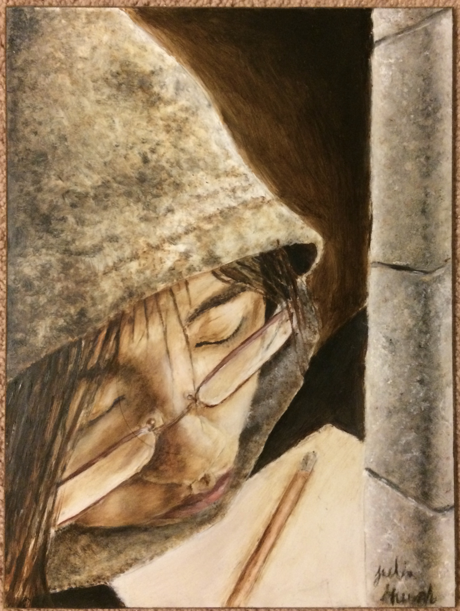

Artwork
In my spare time and electives taken at school, I enjoy painting and creating things from scratch. Here are some artworks, I have created over the years:
Tree House
In this illustration done in pen and pencil crayon, I aimed to communicate the message that humans rely on the environment, thus should not harm it.

Your Path
The message of this painting is to choose your own path of where you want to go, don't get influenced by others. This painting was done in acrylic.

Self-Portrait
The mood of uncertainty is explored in this painting.
Self-Portrait
This poster done in oil pastel, experiments with colours.
Notebook Design
These are two notebooks I decorated with acrylic paint using a sponge texture technique.
Garden Mask
This a dragon mask made in clay.
Chair
Using cardboard, a chair was made.
Summer Hat
This is a hat I made in cardboard, painted with acrylics. It was made during the covid lockdown as I wanted a sun hat without having to head to the store.